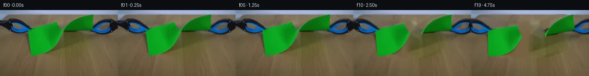

![首帧]()

Round 00
2026-11-04T23:51:40.629499+00:00像素候选变化代码 +265/−0inspection 更新
pixels 1d79e18891f75740 · code 3457454d3230b3d9
查看本轮 generate.py 真实 diff
--- previous/generate.py
+++ current/generate.py
@@ -0,0 +1,265 @@
+"""Local RGB segmentation, texture warps, and analytic tear animation.
+No external inputs, models, renderer, network, or image-view tools are used.
+"""
+from pathlib import Path
+import json
+import numpy as np
+from PIL import Image, ImageDraw
+from scipy import ndimage as ndi
+import cv2
+from artifact_io import save
+
+ROOT = Path(__file__).resolve().parent
+H, W = 144, 256
+Y, X = np.mgrid[:H, :W].astype(np.float32)
+SOURCE = np.asarray(Image.open(ROOT / 'first_frame.png').convert('RGB'))
+S = SOURCE.astype(np.float32)
+R, G, B = S.transpose(2, 0, 1)
+
+
+def polygon(points):
+ im = Image.new('L', (W, H))
+ ImageDraw.Draw(im).polygon(points, fill=255)
+ return np.asarray(im) > 0
+
+
+# Numeric foreground seeds; the ring openings are excluded by their RGB values.
+green = (G > R + 18) & (G > B + 12) & (G > 25)
+labels, _ = ndi.label(green)
+sizes = np.bincount(labels.ravel())
+paper_core = labels == (np.argmax(sizes[1:]) + 1)
+left_outline = polygon([(-4,21),(14,18),(24,16),(35,17),(45,20),
+ (53,26),(61,32),(67,37),(71,41),(67,45),(60,49),(49,52),
+ (37,52),(28,49),(20,44),(12,39),(4,34),(-4,34)])
+right_outline = polygon([(260,21),(242,17),(229,17),(219,19),
+ (211,25),(204,31),(198,37),(195,41),(198,46),(206,51),
+ (219,55),(233,54),(242,50),(249,44),(256,37),(260,36)])
+blue_black = (np.maximum.reduce([R,G,B]) < 68) | ((B > R+18) & (B > G+9))
+left_core = left_outline & blue_black & ~ndi.binary_dilation(paper_core)
+right_core = right_outline & blue_black & ~ndi.binary_dilation(paper_core)
+foreground_core = paper_core | left_core | right_core
+
+# Smooth clean tabletop: fit the real, unobstructed table colors, then restore
+# local grain from a deterministic donor band in this same source image.
+shadow_zone = polygon([(52,42),(128,37),(202,39),(217,53),(205,73),
+ (182,91),(133,106),(63,102),(53,72)])
+repair_core = ndi.binary_dilation(foreground_core, iterations=3) | shadow_zone
+safe = (Y >= 10) & ~ndi.binary_dilation(repair_core, iterations=3)
+xn = (X-128)/128
+ytable = (Y-70)/70
+powers = [(i,j) for i in range(4) for j in range(4-i)]
+features = np.stack([xn**i*ytable**j for i,j in powers], axis=-1)
+fit = np.linalg.lstsq(features[safe], S[safe], rcond=None)[0]
+estimate = features @ fit
+# Small source-only high-frequency texture, without importing its lighting.
+tex = S[107:139].copy()
+tex -= ndi.gaussian_filter(tex, sigma=(2,2,0))
+donor_y = 107 + np.mod(Y.astype(int)*3+X.astype(int)//17, 32)
+donor_x = np.mod(X.astype(int)+43, W)
+estimate += .72 * (S - ndi.gaussian_filter(S, sigma=(2,2,0)))[donor_y, donor_x]
+repair_weight = np.clip(ndi.gaussian_filter(repair_core.astype(float), 1.15)*1.15,0,1)
+repair_weight[foreground_core] = 1
+repair_weight[Y < 9] = 0
+PLATE = S*(1-repair_weight[...,None]) + np.clip(estimate,0,255)*repair_weight[...,None]
+
+
+def extract(core, allowed=None):
+ """Estimate boundary coverage by projecting RGB on local foreground RGB."""
+ distance, nearest = ndi.distance_transform_edt(~core, return_indices=True)
+ nearby = distance <= 1.45
+ if allowed is not None:
+ nearby &= ndi.binary_dilation(allowed, iterations=1)
+ near_rgb = S[nearest[0],nearest[1]]
+ vector = near_rgb-PLATE
+ alpha = np.sum((S-PLATE)*vector,axis=-1) / np.maximum(np.sum(vector*vector,axis=-1),1)
+ alpha = np.clip(alpha,0,1) * nearby
+ alpha[core] = 1
+ alpha[alpha < .055] = 0
+ # Unmix the table color at the source anti-aliased outline.
+ texture = (S-(1-alpha[...,None])*PLATE) / np.maximum(alpha[...,None],.06)
+ texture = np.clip(texture,0,255)
+ texture[alpha==0] = near_rgb[alpha==0]
+ return alpha.astype(np.float32), texture.astype(np.float32)
+
+paper_alpha, paper_texture = extract(paper_core)
+left_alpha, left_texture = extract(left_core, left_outline)
+right_alpha, right_texture = extract(right_core, right_outline)
+all_alpha = np.maximum.reduce([paper_alpha,left_alpha,right_alpha])
… diff truncated; 178 more lines …